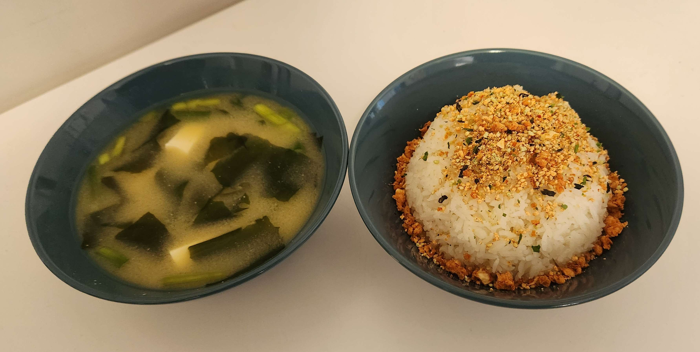

Rice

This is a recipe for rice.
- Jasmine rice
- Water
- Rice cooker
- Add any number of cups of rice to the rice cooker pot.
- Wash the rice with cold water 2-3 times to remove excess starch.
- Place your fingertip on top of the rice and add water until it
reaches your first knuckle.
- Put the pot in the rice cooker and cook the rice.